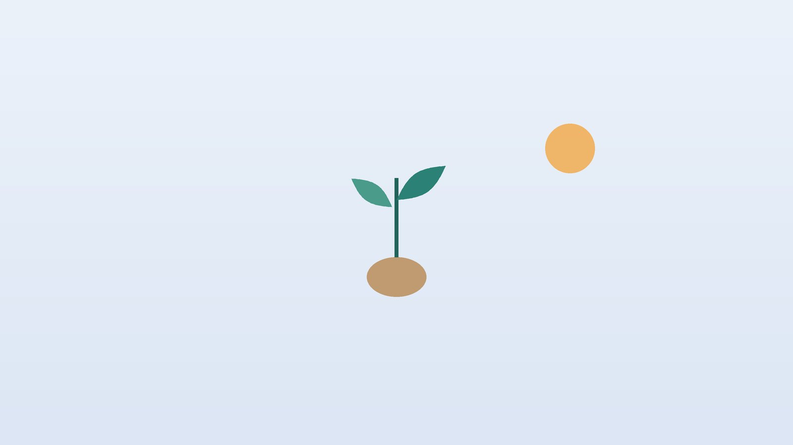

정액검사 결과가 걱정된다면, 남성 난임 한방 관리

혹시 나도 해당될까요?
- 피임 없이 부부관계를 한 지 1년이 넘었는데 임신 소식이 없다
- 아내는 검사를 받았지만 나는 아직 정액검사를 하지 않았다
- 담배를 피우거나 일주일에 여러 번 술자리가 있다
- 사우나, 뜨거운 반신욕을 즐기거나 하루 종일 앉아서 일한다
- 오래 서 있으면 음낭 한쪽이 묵직하고 늘어지는 느낌이 든다
- 근육을 키우려고 남성호르몬 주사나 보충제를 쓴 적이 있다
이 체크리스트는 진단 도구가 아니라 상담이 필요한지 가늠해 보는 참고용입니다.
정액검사 결과는 어떻게 읽고, 원인은 무엇인가요?
세계보건기구(WHO)가 2021년에 낸 정액검사 매뉴얼 6판은 자연 임신에 성공한 남성들의 수치에서 하위 5%에 해당하는 값을 참고 하한으로 제시합니다. 대표적으로 정액량 1.4mL, 정자 농도 1mL당 1,600만 마리, 전체 운동성 42%, 앞으로 나아가는 운동성 30%, 정상 모양 4%입니다. 이 값보다 낮다고 임신이 불가능한 것도, 높다고 반드시 되는 것도 아니며, 수치가 날마다 흔들려 이상이 나오면 몇 주 뒤 다시 확인합니다.
원인으로 가장 먼저 살피는 것은 고환 위쪽 정맥이 늘어나 피가 고이는 정계정맥류입니다. 일반 남성의 약 15%에서 보이지만 난임 남성에서는 더 흔하며, 고환 온도를 올려 정자 생성을 방해할 수 있습니다. 이 밖에 FSH·LH·테스토스테론 같은 호르몬 이상, 흡연과 과음, 음낭을 데우는 습관, 비만, 잠복고환 수술이나 항암 치료 이력이 영향을 줍니다. 미국비뇨의학회와 미국생식의학회(AUA/ASRM) 진료지침은 난임 부부라면 남성도 처음부터 함께 평가받도록 권합니다.
비뇨의학과 검사나 응급 진료가 먼저인 신호
- 정액검사에서 정자가 한 마리도 보이지 않았다(무정자증)
- 고환에 단단한 멍울이 만져지거나 양쪽 크기가 눈에 띄게 다르다
- 음낭 한쪽이 갑자기 몹시 아프고 붓는다
- 정액에 피가 섞여 나오거나 사정할 때 통증이 심하다
- 성욕이 크게 줄고 가슴이 커지거나 두통·시야 이상이 함께 있다
갑작스러운 음낭 통증은 고환이 꼬이는 염전일 수 있어 몇 시간 안에 응급실을 찾아야 합니다. 근육 강화 목적으로 남성호르몬제나 스테로이드를 쓰고 있다면 그 자체가 정자 생성을 크게 떨어뜨리므로 비뇨의학과에 꼭 말씀하세요.
한의학은 남성 난임을 어떻게 보나요?
『황제내경』 소문 상고천진론은 남자가 열여섯 무렵 신기(腎氣)가 왕성해져 천계(天癸)에 이르고 정기가 넘쳐 '자식을 둘 수 있다(故能有子)'고 하여, 생식 능력을 신(腎)의 정기와 연결했습니다. 『동의보감』 내경편은 정(精) 문을 따로 두고 '정은 몸의 근본(精爲身本)'이라 하여, 정을 함부로 소모하지 않고 기르는 것을 건강의 바탕으로 보았습니다.
그래서 정자의 수가 적고 힘이 없는 상태를 신정이 부족하거나 신의 양기가 약한 모습으로, 아래로 몰린 습열이나 막힌 기혈이 정의 생성과 흐름을 방해하는 모습으로 나누어 봅니다. 이런 해석은 검사 결과를 대신하는 것이 아니라, 같은 수치라도 사람마다 다른 몸 상태를 어떻게 돌볼지 정하는 기준입니다.
나는 어떤 유형일까?
1. 신양허(腎陽虛) 차고 기운 없는 유형
- 이런 분에게 많아요
- 몸이 차고 쉽게 지치는 분, 40대 이후
- 나타나는 모습
- 정자 운동성이 낮고 성욕과 발기력이 떨어졌다
- 함께 오는 몸의 신호
- 허리·무릎이 시리고 소변이 잦으며 손발이 참
- 진찰에서 보이는 모습
- 혀가 옅고 촉촉하며 맥이 깊고 약함
- 치료 방향
- 신의 양기를 데워 정을 북돋우는 방향 (우귀환 계열)
- 오늘부터 해 볼 것
- 찬 음료를 줄이고 허리와 아랫배를 따뜻하게 두세요.
2. 신정부족(腎精不足) 마르고 진액이 모자란 유형
- 이런 분에게 많아요
- 밤샘과 과로가 잦은 분, 마른 체형
- 나타나는 모습
- 정액량과 정자 농도가 낮다
- 함께 오는 몸의 신호
- 입 마름, 손발바닥 열감, 잠이 얕고 식은땀
- 진찰에서 보이는 모습
- 혀가 붉고 설태가 적으며 맥이 가늘고 빠름
- 치료 방향
- 정과 진액을 채우는 방향 (오자연종환·좌귀환 계열)
- 오늘부터 해 볼 것
- 자정 전에 잠들고 7시간 이상 자는 날을 늘리세요.
3. 습열하주(濕熱下注) 끈적하고 열이 몰린 유형
- 이런 분에게 많아요
- 술과 기름진 음식이 잦은 분, 과체중
- 나타나는 모습
- 정액이 끈적하고 잘 풀리지 않으며 백혈구가 보이기도 한다
- 함께 오는 몸의 신호
- 음낭 습함·가려움, 소변이 진하고 시원찮음
- 진찰에서 보이는 모습
- 누런 설태가 두껍고 맥이 미끄럽고 빠름
- 치료 방향
- 아래로 몰린 습과 열을 걷어내는 방향 (용담사간탕 계열)
- 오늘부터 해 볼 것
- 석 달 동안 술을 끊고 야식을 멈춰 보세요.
4. 기체혈어(氣滯血瘀) 막히고 뭉친 유형
- 이런 분에게 많아요
- 스트레스가 많은 분, 정계정맥류가 있는 분
- 나타나는 모습
- 음낭이 묵직하게 당기고 오래 서 있으면 불편하다
- 함께 오는 몸의 신호
- 옆구리 답답함, 한숨, 예민함
- 진찰에서 보이는 모습
- 혀가 어둡거나 혀 밑 정맥이 굵고 맥이 팽팽함
- 치료 방향
- 뭉친 기운을 풀고 혈의 흐름을 돕는 방향 (시호소간산·혈부축어탕 계열)
- 오늘부터 해 볼 것
- 오래 서 있는 날은 중간중간 누워 다리를 쉬게 하세요.
한의원에서는 어떻게 진찰하나요?
- 검사 결과 확인: 정액검사지, 호르몬 수치, 음낭 초음파 결과를 함께 보며 어떤 수치가 낮은지 정리합니다.
- 생활 점검: 흡연·음주량, 사우나와 반신욕, 운전이나 앉아 있는 시간, 직업상 열이나 화학물질 노출을 여쭙니다.
- 약과 보충제: 근육 보충제나 남성호르몬제를 쓰는지 확인합니다. 드시는 약은 목록을 가져오시면 하나씩 살펴 처방에 반영합니다.
- 설진·맥진: 냉한지 열이 많은지, 허약한지 막혔는지를 판단해 유형을 정합니다.
침·약침·한약 치료는 어떻게 하나요?
1. 침 치료
- 관원(關元): 배꼽에서 아래로 손가락 네 개 너비. 아랫배의 원기를 돕는 대표 혈자리입니다.
- 신수(腎兪): 허리에서 갈비뼈 맨 아래 끝과 높이가 비슷한 둘째 허리뼈 아래, 양옆으로 손가락 두 개 너비. 신의 기운을 돕습니다.
- 태계(太谿): 발 안쪽 복사뼈와 아킬레스건 사이의 오목한 곳. 정과 진액이 부족한 분께 씁니다.
- 삼음교(三陰交): 안쪽 복사뼈 꼭대기에서 위로 손가락 네 개 너비, 정강이뼈 뒤쪽 가장자리. 하복부 순환에 씁니다.
- 족삼리(足三里): 무릎뼈 아래 바깥 오목한 곳에서 손가락 네 개 너비 아래. 전신의 기운과 소화를 돕습니다.
남성 난임의 침 연구는 참여자가 적고 방법이 제각각이라, 정액 수치가 좋아졌다는 보고가 있어도 아직 결론을 내리기 어렵습니다.
2. 약침
허리와 골반 주변이 차고 굳은 분께 약침을 시행합니다. 몸이 찬 분은 온열 요법을 함께 시행합니다. 음낭 부위에는 직접 열을 가하지 않습니다.
3. 한약
유형에 맞춘 탕약을 정자가 새로 만들어지는 주기에 맞춰 3개월 단위로 복용하고, 끝나면 재검사로 변화를 봅니다. 인공수정이나 시험관 시술 일정이 잡혀 있다면 시술 날짜와 복용 중인 약을 알려 주세요. 확인 후 일정에 맞춰 처방합니다. 한의약 난임 치료 지원 사업이 매년 진행되고 있으니, 부부의 대상 여부와 신청 방법은 원내로 문의해 주세요. 한약은 원장이 원내 탕전실에서 약재 선별부터 달이는 과정까지 직접 관리하며, 10일분씩 처방해 복용 경과를 보고 약재 구성과 양을 조절합니다.
원장님이 네이버 블로그에 진료 이야기와 건강 정보를 꾸준히 올리고 있습니다. 더 많은 이야기는 블로그에서 확인해 보세요.
블로그 보기관리는 어떤 순서로 진행되나요?
- 비뇨의학과 검사 정액검사, 음낭 진찰, 필요하면 호르몬·초음파 검사로 원인을 확인합니다.
- 첫 한방 진료 검사 결과와 생활 습관, 유형을 정리하고 3개월 계획을 세웁니다.
- 1~3개월 주 1~2회 침 치료와 탕약, 금연·절주·열 피하기를 함께 이어 갑니다.
- 재검사와 다음 단계 3개월 뒤 정액검사로 변화를 보고, 아내의 나이와 결과에 따라 시술 여부를 함께 판단합니다.
아내의 나이가 35세 이상이라면 기다리는 시간이 아까울 수 있어, 한방 관리와 난임 시술을 나란히 진행하는 경우가 많습니다.
정자를 돌보는 생활 관리
- 금연: 전자담배를 포함해 담배를 끊으세요. 효과를 확인하려면 최소 석 달은 유지해야 합니다.
- 술: 과음은 호르몬과 정자 모두에 부담을 줍니다. 관리 기간에는 끊거나 크게 줄이세요.
- 열 피하기: 사우나, 뜨거운 탕, 노트북을 무릎에 올리는 습관, 꽉 끼는 속옷을 피하고, 오래 앉아 있으면 한 시간마다 일어나세요.
- 체중과 운동: 허리둘레를 줄이는 것이 호르몬 균형에 도움이 됩니다. 걷기와 근력 운동을 섞되 무리한 고강도 훈련은 피하세요.
- 관계 간격: 너무 오래 참기보다 배란기 전후로 2~3일 간격의 관계가 정자의 상태를 고르게 유지하는 데 유리합니다.
다른 진료가 함께 필요한 경우
- 정계정맥류가 만져지고 정액 수치가 낮다면 비뇨의학과에서 수술 여부를 상의하세요.
- 무정자증이나 정자 수가 매우 적다면 염색체와 Y염색체 미세결실 검사가 필요할 수 있습니다.
- 아내도 산부인과에서 배란, 나팔관, 자궁 상태를 함께 확인받으세요.
자주 묻는 질문 Q&A
- Q1. 정액검사 한 번 나쁘게 나오면 남성 난임인가요?
- 아닙니다. 수치는 날마다 흔들려 몇 주 뒤 다시 검사해 판단합니다.
- Q2. 왜 3개월 단위로 관리하나요?
- 정자가 만들어지는 데 약 74일, 이동해 나오기까지 시간이 더 걸려 생활 변화의 효과가 석 달쯤 뒤 수치에 나타나기 때문입니다.
- Q3. 한약을 먹으면 정자 수가 꼭 늘어나나요?
- 사람마다 반응이 달라 약속할 수 없으며, 재검사로 변화를 확인합니다.
- Q4. 시험관 시술 중에도 한약을 먹어도 되나요?
- 시술 날짜와 복용 중인 약을 알려 주시면 확인 후 일정에 맞춰 처방합니다.
- Q5. 남성호르몬 주사를 맞으면 정자가 늘어나나요?
- 오히려 정자 생성을 떨어뜨릴 수 있어 난임 치료 목적으로는 쓰지 않습니다.
- Q6. 정계정맥류가 있으면 꼭 수술해야 하나요?
- 정액 수치와 크기, 부부 상황에 따라 비뇨의학과에서 판단합니다.
- Q7. 검사 전 금욕은 며칠이 좋나요?
- WHO 매뉴얼은 2~7일을 권하며, 재검사 때도 비슷한 기간을 지키는 것이 좋습니다.
- Q8. 집에서 해 볼 지압이 있나요?
- 잠들기 전 태계와 족삼리를 엄지로 5초씩 지그시 눌러 보세요.
문원열 대표원장한의사 · 365스마일한의원
임상 경력 15년, 인천 서구 가정동에서 개원 후 10년째 진료하고 있으며, FCST 턱관절학회·연부조직학회·침도학회 등에서 활동합니다. 아픈 곳만이 아니라 증상의 원인을 찾아 진료합니다.
진료 안내
- 진료시간
- 평일 09:00~20:00 (점심시간 13:00~14:00, 접수 마감 19:30)
토·일·공휴일 09:00~15:00 (접수 마감 14:30) - 주소
- 인천광역시 서구 가경주로 46, 2층 (가정동)
인천2호선 가정중앙시장역 인근
영상으로 길 안내 보기 → - 주차
- 한의원 건물 바로 앞 1층 도원주차장
- 예약
- 예약 바로가기 또는 전화 예약
진료시간은 사정에 따라 바뀔 수 있으니 방문 전 전화로 확인해 주세요.
함께 읽으면 좋은 칼럼
건강 칼럼 전체 보기 →
참고 자료
- World Health Organization. WHO laboratory manual for the examination and processing of human semen, 6th edition. 2021
- Schlegel PN, et al. Diagnosis and Treatment of Infertility in Men: AUA/ASRM Guideline. Journal of Urology, 2021
- 『황제내경 소문(素問)』 상고천진론(上古天眞論)
- 허준, 『동의보감(東醫寶鑑)』 내경편 정(精)
- 질병관리청 국가건강정보포털 — 원문
※ 이 글은 일반적인 건강 정보이며, 개인의 상태에 따라 치료 방법과 결과는 다를 수 있습니다. 정확한 진단과 치료는 진료를 통해 결정됩니다. 침·약침 시술 후 드물게 멍, 통증 등이 생길 수 있습니다.